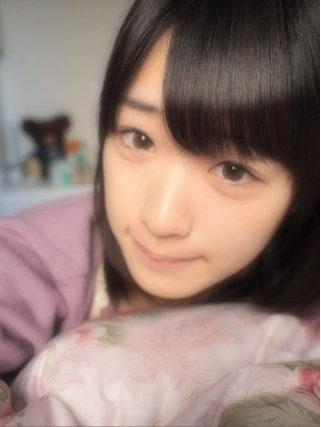
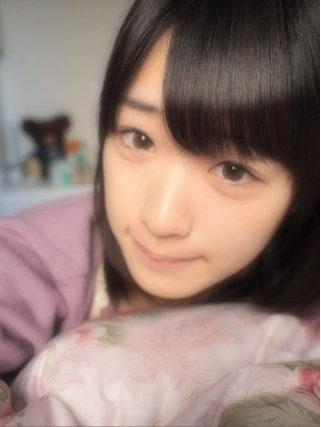

2012/0611Mon（´-`）.｡oO(かずみん×71
こんにちは(*^◯^*)
いつも応援ありがとうございます！
前回のコメント、
沢山の方が小学生の頃のあだ名
気になってくれてるみたいですね...
...秘密です(￣▽￣)
本当に変なのばかりだったので！
-------
昨日は福岡でミニ握手会でした(#^.^#)
来てくださったみなさん、
どうもありがとう(*^^*)
福岡はイオンツアーで来た事が
あったので、握手会は2回目でした！
楽しかったなぁ♪
本当にファンの人はみんな、
優しくていい人（ ; ; ）
普段のイベントでは九州に中々いけないから
もっともっと人気になってまた絶対
福岡、九州に行きたいです！
本当にありがとうございました(*^_^*)
------------
先日、文庫本金色のガッシュ！も
ついに完結！16巻特装版が
発売されましたね！！
最近握手会でガッシュネタをふってきて
くださる方が沢山いらっしゃって
嬉しいのです\(//∇//)\
撮影の合間はガッシュ！
帰ってからもガッシュ！
ガッシュを知らない方へ
ガッシュという主人公の魔物は
優しい王様を目指して戦うのです。
目標に向かって頑張る姿勢って
感動しますよね^^
よし、私も頑張るぞって気持ちに
なれるんです(*^^*)
一番の元気の源は
みなさんからの声援ですけどね\(//∇//)\
金色のガッシュを知ってる方へ
誰が一番好きですか(^^)？
私はレイラ＆アルベール、ガッシュ＆清麿
チェリッシュ、テッド、キッド、ロップス
パムーン、ビクトリーム...
書ききれないくらいみんな好きです！
今度握手会でガッシュトークしましょう！
--------
さて、ついに復活しました。
今日の一枚は...
さゆにゃん( ´ ▽ ` )ﾉ
可愛いわぁ！
人形みたいね！
次回は万理華♪
とびっきりのが撮れました。
万理華推しのみなさん、
お楽しみに( ´ ▽ ` )ﾉ
----------
おっ
今日は乃木坂どこでしたね！
デコだしどうでしたか(￣▽￣)？
剣道で鍛えた反射神経とスナップは
発揮できましたかね！？
感想待ってます！
そして、次回の乃木坂ってどこは
サードの選抜発表。
乃木坂ではこれがひとつの試練です。
続きはまた来週に。
それでは、
今日はこの辺で(^^)
明日も頑張りましょう！
おやすみなさい...☆

いつも応援ありがとうございます！
前回のコメント、
沢山の方が小学生の頃のあだ名
気になってくれてるみたいですね...
...秘密です(￣▽￣)
本当に変なのばかりだったので！
-------
昨日は福岡でミニ握手会でした(#^.^#)
来てくださったみなさん、
どうもありがとう(*^^*)
福岡はイオンツアーで来た事が
あったので、握手会は2回目でした！
楽しかったなぁ♪
本当にファンの人はみんな、
優しくていい人（ ; ; ）
普段のイベントでは九州に中々いけないから
もっともっと人気になってまた絶対
福岡、九州に行きたいです！
本当にありがとうございました(*^_^*)
------------
先日、文庫本金色のガッシュ！も
ついに完結！16巻特装版が
発売されましたね！！
最近握手会でガッシュネタをふってきて
くださる方が沢山いらっしゃって
嬉しいのです\(//∇//)\
撮影の合間はガッシュ！
帰ってからもガッシュ！
ガッシュを知らない方へ
ガッシュという主人公の魔物は
優しい王様を目指して戦うのです。
目標に向かって頑張る姿勢って
感動しますよね^^
よし、私も頑張るぞって気持ちに
なれるんです(*^^*)
一番の元気の源は
みなさんからの声援ですけどね\(//∇//)\
金色のガッシュを知ってる方へ
誰が一番好きですか(^^)？
私はレイラ＆アルベール、ガッシュ＆清麿
チェリッシュ、テッド、キッド、ロップス
パムーン、ビクトリーム...
書ききれないくらいみんな好きです！
今度握手会でガッシュトークしましょう！
--------
さて、ついに復活しました。
今日の一枚は...
さゆにゃん( ´ ▽ ` )ﾉ
可愛いわぁ！
人形みたいね！
次回は万理華♪
とびっきりのが撮れました。
万理華推しのみなさん、
お楽しみに( ´ ▽ ` )ﾉ
----------
おっ
今日は乃木坂どこでしたね！
デコだしどうでしたか(￣▽￣)？
剣道で鍛えた反射神経とスナップは
発揮できましたかね！？
感想待ってます！
そして、次回の乃木坂ってどこは
サードの選抜発表。
乃木坂ではこれがひとつの試練です。
続きはまた来週に。
それでは、
今日はこの辺で(^^)
明日も頑張りましょう！
おやすみなさい...☆

2012/06/11 01:18
コメント(413)
３ｒｄ決まったね！
どうなっても応援するで、がんばれ！
どうなっても応援するで、がんばれ！
さすが、剣道で鍛えられた
スナップ(((o(*ﾟ▽ﾟ*)o)))笑
かずみん速過ぎやろ！笑
純也(｡･∀･｡)☆彡
スナップ(((o(*ﾟ▽ﾟ*)o)))笑
かずみん速過ぎやろ！笑
純也(｡･∀･｡)☆彡
乃木どこ見たよー！
ポンパめっちゃかわいかったよ！
来週はいよいよ3rdシングル選抜発表だね！
かずみんがメンバー･七福神入りするの願ってます！
ポンパめっちゃかわいかったよ！
来週はいよいよ3rdシングル選抜発表だね！
かずみんがメンバー･七福神入りするの願ってます！
こんばんは(^-^)v
デコ出し可愛いかったよ
握手会でもやってくださいd(⌒ー⌒)!
あと反射神経半端ないですね♪
ビックリしましたよ
明日からまた頑張っていきましょう(*^^*)
デコ出し可愛いかったよ
握手会でもやってくださいd(⌒ー⌒)!
あと反射神経半端ないですね♪
ビックリしましたよ
明日からまた頑張っていきましょう(*^^*)
ヤッシーです(^-^)v
福岡の握手会に行きたかったわーo(^o^)o
さすがに遠くて行けんし…(T^T)
いよいよ来週、かずみんに会えるーo(^o^)o!!
楽しみ過ぎて最近眠れません(笑)!!
かずみーん!!
先月、握手したの忘れてないよね(笑)(・・?
忘れてたら来週の握手会で泣くからね(笑)!!
へばっまずな(^-^)/~~
福岡の握手会に行きたかったわーo(^o^)o
さすがに遠くて行けんし…(T^T)
いよいよ来週、かずみんに会えるーo(^o^)o!!
楽しみ過ぎて最近眠れません(笑)!!
かずみーん!!
先月、握手したの忘れてないよね(笑)(・・?
忘れてたら来週の握手会で泣くからね(笑)!!
へばっまずな(^-^)/~~
握手会楽しかったよー
生かずだゼゼゼゼゼーイゎ最高やった!!
また福岡きてね!!
俺も東京いくけん!!
キャンチョメ忘れんでね(*⌒▽⌒*)
ぢゃまたね(*^^*)
生かずだゼゼゼゼゼーイゎ最高やった!!
また福岡きてね!!
俺も東京いくけん!!
キャンチョメ忘れんでね(*⌒▽⌒*)
ぢゃまたね(*^^*)
でこ出し、めっちゃかわいかった！
個別でも期待するかも
ガッシュは読んでないので、
すいません
ついていけないっす・・・
選抜は心配してないので、
今度の個別では一切触れません
個別でも期待するかも
ガッシュは読んでないので、
すいません
ついていけないっす・・・
選抜は心配してないので、
今度の個別では一切触れません
お疲れ～(´Д｀)
優しくていい人ばっかりだろ～
次は福岡で全国握手会でも開催して来て下さいな（笑）
3rdシングル楽しみです!
次は福岡で全国握手会でも開催して来て下さいな（笑）
3rdシングル楽しみです!
初コメでーす(^-^)/
金色のガッシュかぁ．．．．．
ごめん(-｡-;
あんまり知らないからわかりません( T_T)
今度勉強して話せるようにがんばる!!
今日の乃木どこすごかった！
さすが剣道って感じだった‼
今度剣道教えて下さ〜い(^-^)/
金色のガッシュかぁ．．．．．
ごめん(-｡-;
あんまり知らないからわかりません( T_T)
今度勉強して話せるようにがんばる!!
今日の乃木どこすごかった！
さすが剣道って感じだった‼
今度剣道教えて下さ〜い(^-^)/
ミニ個別握手会お疲れ様でした
長時間大変だったと思います。
前回の福岡は制服だったので、
今回の私服はかわいかったですね
かずみん、綺麗さに磨きが掛かっていたので、
成長にびっくりします。
まだ、握手会続きますので、
体に気をつけてがんばってください！
長時間大変だったと思います。
前回の福岡は制服だったので、
今回の私服はかわいかったですね
かずみん、綺麗さに磨きが掛かっていたので、
成長にびっくりします。
まだ、握手会続きますので、
体に気をつけてがんばってください！
どーも！オレンジです！
握手会お疲れ様(*^^*)
とうとう次は東京個別♪
やっとかずみんに会える(*^^*)
------------
ガッシュ発売だったのか(^_^;)
かずみんと握手したいからマンガは回避かな(^_^;)
でも今友達に借りてる24～27巻は家にあるよ！(笑)
ちょうど27巻は清麿が復活してゼオンと戦うところ(^o^)/
ガッシュトークしよしよ(^o^)/
--------
さゆにゃんかわいいなぁ(照)
乃木坂はみんな可愛い(*^^*)
でもかずみんしかぁぁぁっ(照)
----------
デコ出しかずみんよかったよ♪
握手会では是非デコ出しか、ポニーテールをやってほしいな(笑)
叩いてかぶってじゃんけんぽんは本当にすごかった(^o^)/
さすが剣道二段(*^^*)
来週の乃木どこは、、
楽しみにしてるね(*^^*)
長文ゴメンね(*_*)
それじゃあこの辺で！
今日はお疲れ様(*^^*)
明日も頑張ろう
愛羅武勇
 オレンジ
オレンジ
握手会お疲れ様(*^^*)
とうとう次は東京個別♪
やっとかずみんに会える(*^^*)
------------
ガッシュ発売だったのか(^_^;)
かずみんと握手したいからマンガは回避かな(^_^;)
でも今友達に借りてる24～27巻は家にあるよ！(笑)
ちょうど27巻は清麿が復活してゼオンと戦うところ(^o^)/
ガッシュトークしよしよ(^o^)/
--------
さゆにゃんかわいいなぁ(照)
乃木坂はみんな可愛い(*^^*)
でもかずみんしかぁぁぁっ(照)
----------
デコ出しかずみんよかったよ♪
握手会では是非デコ出しか、ポニーテールをやってほしいな(笑)
叩いてかぶってじゃんけんぽんは本当にすごかった(^o^)/
さすが剣道二段(*^^*)
来週の乃木どこは、、
楽しみにしてるね(*^^*)
長文ゴメンね(*_*)
それじゃあこの辺で！
今日はお疲れ様(*^^*)
明日も頑張ろう
愛羅武勇
この試練がまたつらいよね。
でも乗り越えられるはず。
個別楽しみにしてます。
でも乗り越えられるはず。
個別楽しみにしてます。
もっかい書くー
でこっぱちガジ可愛かったー
おやみー
でこっぱちガジ可愛かったー
おやみー
最近のかずみんが載せてる写真、
なんかフォーカスがふわっとしてて可愛いよね
では、おやすみなさゆりんZzz…(*´～｀*)｡o○
かずみん、こんにちは。
今週の乃木どこ、見ました。
かずみん、おでこだしてるのもかわいいですね。新鮮でした。
反射神経もすごかったですね。さすが剣道できたえていただけあります。見ごたえがありました。
来週は選抜発表ですね。ドキドキしながら待っています。かずみんが七福神になると信じていますが、どんな結果であれ、変わらず応援するので、見守らせてください。
では。
今週の乃木どこ、見ました。
かずみん、おでこだしてるのもかわいいですね。新鮮でした。
反射神経もすごかったですね。さすが剣道できたえていただけあります。見ごたえがありました。
来週は選抜発表ですね。ドキドキしながら待っています。かずみんが七福神になると信じていますが、どんな結果であれ、変わらず応援するので、見守らせてください。
では。
姉さんこんばんわ(^^ゞ
福岡握手会お疲れ様！
広島に推しが居たけど、かずみんに会いに言って少し良かったかも（笑）
ガッシュ良いよね！
注意
俺はウマゴンではなくマサゴンなどで気をつけて下さい（笑）
次東京の個別握手会行くからよろしくねp(^^)q
デコ出し良かったよ！
じゃまたね(☆＿☆)
福岡握手会お疲れ様！
広島に推しが居たけど、かずみんに会いに言って少し良かったかも（笑）
ガッシュ良いよね！
注意
俺はウマゴンではなくマサゴンなどで気をつけて下さい（笑）
次東京の個別握手会行くからよろしくねp(^^)q
デコ出し良かったよ！
じゃまたね(☆＿☆)
こんばんは。
ボテっていいます。
写真やっぱり一眼レフはきれいですね。
カメラはあんまり詳しくないんだけど。
日常のさりげない一枚が好きです。
また今後も楽しみにしてます。
ボテっていいます。
写真やっぱり一眼レフはきれいですね。
カメラはあんまり詳しくないんだけど。
日常のさりげない一枚が好きです。
また今後も楽しみにしてます。
おつかれさまです:)
のぎどこみたよ～＼(^^)／
髪も良かったし、反射神経めっちゃすごかった(￣▽￣＝￣▽￣）
地味にゆったんも反応素晴らしかったよね:>(笑)
のぎどこみたよ～＼(^^)／
髪も良かったし、反射神経めっちゃすごかった(￣▽￣＝￣▽￣）
地味にゆったんも反応素晴らしかったよね:>(笑)
2回目やー(・∀・)
ガッシュの話し楽しかったね!!かずみんキッド好きやんや～
でもキッドの最後ゎホント泣けるよね(>_<。)
俺ゎキャンチョメが好きっ!!それ以外ならウォンレイ、テッド、ウマゴンが好きなんよー
またガッシュの話ししようね(≧∀≦)
また後でコメするねー(笑)
ガッシュの話し楽しかったね!!かずみんキッド好きやんや～
でもキッドの最後ゎホント泣けるよね(>_<。)
俺ゎキャンチョメが好きっ!!それ以外ならウォンレイ、テッド、ウマゴンが好きなんよー
またガッシュの話ししようね(≧∀≦)
また後でコメするねー(笑)
かずみんヤッホー！
ガッシュは読んでないので
スルーします…が、乃木どこはしっかり観ましたよ！
今や自分にとって、乃木どこが週の終わり兼、週の始まりとなっています！
３rd選抜には現時点ではあえて触れません。
来週を楽しみにしてます。
デコ出しかずみんも可愛かったけど、ぐるぐるバットでかずみんを見たかった！
目が回っていつもの挙動不審？(失礼)に磨きが掛かれば爆笑間違いナシだと思ったけどなぁ。
ガッシュは読んでないので
スルーします…が、乃木どこはしっかり観ましたよ！
今や自分にとって、乃木どこが週の終わり兼、週の始まりとなっています！
３rd選抜には現時点ではあえて触れません。
来週を楽しみにしてます。
デコ出しかずみんも可愛かったけど、ぐるぐるバットでかずみんを見たかった！
目が回っていつもの挙動不審？(失礼)に磨きが掛かれば爆笑間違いナシだと思ったけどなぁ。
乃木どこ？見たよー！
叩いてかぶって・・・
す、すごい！
なんてハイスピードな戦い(笑)
ガジ頑張ってたね(笑)
デコ出し・かずみん！素敵(笑)
３rdシングル、かずみんは、変わらず七福神で！！
と、祈っておりやす(^-^)
でわ(ρ_-)ノ
叩いてかぶって・・・
す、すごい！
なんてハイスピードな戦い(笑)
ガジ頑張ってたね(笑)
デコ出し・かずみん！素敵(笑)
３rdシングル、かずみんは、変わらず七福神で！！
と、祈っておりやす(^-^)
でわ(ρ_-)ノ
北辰一刀流免許皆伝のワシがお手合わせ願いたいがぜよ(笑)
…ってこれ、種明かしすると龍馬のコスプレを乃木坂の現場でしたことがあるんだよ、龍馬ファンの娘限定でね(^_^;)
気になったら聞き込み調査するといいよ(笑)
それはさておき…福岡といえばライバルのAKBグループのHKTの本拠地！ 対決ライブとかやって欲しいなぁ… もちろん応援するのは乃木坂だからね!(b^ー°)
…ってこれ、種明かしすると龍馬のコスプレを乃木坂の現場でしたことがあるんだよ、龍馬ファンの娘限定でね(^_^;)
気になったら聞き込み調査するといいよ(笑)
それはさておき…福岡といえばライバルのAKBグループのHKTの本拠地！ 対決ライブとかやって欲しいなぁ… もちろん応援するのは乃木坂だからね!(b^ー°)
一実さん、こんばんは。
福岡お疲れ様。
今回も楽しかった！
握手する前から手を振って待ってくれてんのがめっちゃ嬉しかった！
まいやんに俺の呼び方教えてもらったってことは、楽屋でまいやんと俺のことを話してたってことよね!?
幸せすぎる！
光栄です！
空港でも会えたしね。
出発ロビー向かってる時、何かニヤニヤしながらこっち見てる子がおるなーと思ったら一実さんやった(笑)。
目悪いから最初誰か分からんかった。
まいやん、ななみん、さゆりんにも会えて最後にテンション高山になったよ！
また今週幕張行くけんがよろしくね！
福岡お疲れ様。
今回も楽しかった！
握手する前から手を振って待ってくれてんのがめっちゃ嬉しかった！
まいやんに俺の呼び方教えてもらったってことは、楽屋でまいやんと俺のことを話してたってことよね!?
幸せすぎる！
光栄です！
空港でも会えたしね。
出発ロビー向かってる時、何かニヤニヤしながらこっち見てる子がおるなーと思ったら一実さんやった(笑)。
目悪いから最初誰か分からんかった。
まいやん、ななみん、さゆりんにも会えて最後にテンション高山になったよ！
また今週幕張行くけんがよろしくね！
しっきーです∀
握手会お疲れ様(*^^*)
あれ？かずみんの私服は？
ｶﾞｯｼｭの文庫本もついに完結いったかー！
最近また漫画１から読みなおしてる∀
一番好きなの・・・名古屋のミニ握手会ではﾌﾞﾗｺﾞって言ったけど
いま読み返しててﾊﾞﾘｰかなーって思った！
ﾌｧｳｰﾄﾞのとこでｶﾞｯｼｭ助けるやつ！
感動だー(ToT)
来週の乃木どこ気になるー！！！！！！
握手会お疲れ様(*^^*)
あれ？かずみんの私服は？
ｶﾞｯｼｭの文庫本もついに完結いったかー！
最近また漫画１から読みなおしてる∀
一番好きなの・・・名古屋のミニ握手会ではﾌﾞﾗｺﾞって言ったけど
いま読み返しててﾊﾞﾘｰかなーって思った！
ﾌｧｳｰﾄﾞのとこでｶﾞｯｼｭ助けるやつ！
感動だー(ToT)
来週の乃木どこ気になるー！！！！！！
ウマゴンだっけあれには癒されるし声もいい(〃･ω･〃)
乃木どこ見ました!反射神経良かったです
選抜メンバー発表気になります(>_<)
乃木どこ見ました!反射神経良かったです
選抜メンバー発表気になります(>_<)
キャンチョメかな！
あんなオモシロイのにフォルゴレで感動。
かずみん、「叩いて」強すぎ
あんなオモシロイのにフォルゴレで感動。
かずみん、「叩いて」強すぎ
祝！復活！メンバースナップ！
＼(^o^)／
それにしても復活１枚目から超クオリティ高山！！！
この表情、撮ろうと思っても撮れませんよ普通！
次回の伊藤万理華ちゃんも楽しみにしてます^^
小学生の頃のあだ名は内緒かー…残念
まぁまた忘れた頃に気が向いたら発表するくらいで
あ、ちなみに小学生の頃のあだ名なんて、かずみんだけじゃなしにみんなヘンテコですよー！笑
3rdシングル、かずみんが選抜に入っている事を祈ってますね♪
＼(^o^)／
それにしても復活１枚目から超クオリティ高山！！！
この表情、撮ろうと思っても撮れませんよ普通！
次回の伊藤万理華ちゃんも楽しみにしてます^^
小学生の頃のあだ名は内緒かー…残念
まぁまた忘れた頃に気が向いたら発表するくらいで
あ、ちなみに小学生の頃のあだ名なんて、かずみんだけじゃなしにみんなヘンテコですよー！笑
3rdシングル、かずみんが選抜に入っている事を祈ってますね♪
やったーーーーーーーー
写真コーナーきたーーーーーー
さゆにゃん・・・美少女すぎる・・・・
乃木どこ見たよー
かずみんの反射神経のよさすごい！
日村さんよりよっぽどかずみんの方がお手本になってたやん！！
写真コーナーきたーーーーーー
さゆにゃん・・・美少女すぎる・・・・
乃木どこ見たよー
かずみんの反射神経のよさすごい！
日村さんよりよっぽどかずみんの方がお手本になってたやん！！
こんばんかずみん!!
おでこ、オデコ!!
でこ出し、可愛いかったよ!!
スナップも最高だったよ(o^∀^o)
今日は、皆乃木ジャージで、新鮮だったよ(o^∀^o)
さゆにゃん(*^o^*)可愛いね!!
かずみんもね(*^o^*)
Baiponε=ε=┏( ・_・)┛タカポン
おでこ、オデコ!!
でこ出し、可愛いかったよ!!
スナップも最高だったよ(o^∀^o)
今日は、皆乃木ジャージで、新鮮だったよ(o^∀^o)
さゆにゃん(*^o^*)可愛いね!!
かずみんもね(*^o^*)
Baiponε=ε=┏( ・_・)┛タカポン
3回目ー
素晴らしいペースやろ(笑)
でもテッドまぢカッコいいよね!アースとの戦いゎ鳥肌きた!!
ドラグナー・ナグル、セカン・ナグル、サーズ・ナグル、フォルス・ナグルみたいにギアを上げて戦うとこが好きー
ぢゃまたあとでコメントするけんっ(笑)
素晴らしいペースやろ(笑)
でもテッドまぢカッコいいよね!アースとの戦いゎ鳥肌きた!!
ドラグナー・ナグル、セカン・ナグル、サーズ・ナグル、フォルス・ナグルみたいにギアを上げて戦うとこが好きー
ぢゃまたあとでコメントするけんっ(笑)
乃木どこ観たよ！
機敏な動きに驚いた。
3rdの発表はドキドキです。
一度、ファンの前で公開発表してもらいたいものです。
機敏な動きに驚いた。
3rdの発表はドキドキです。
一度、ファンの前で公開発表してもらいたいものです。
質問なんですが剣道で得意技は何だったんですか？僕はいま中3で剣道部に所属しています！ちなみに得意技は面と見せかけて小手です！
初こめです。
ミニ握手会お疲れ様です♪
自分も行きたかったですー(ノ_・,)
かずみんのガッシュに対する愛がめっちゃ凄いですね♪
次の全握までにはガッシュ勉強します(笑)
かずみんの写真めっちゃ可愛い///
待ち受けにしてもいいですか？
では今日はおやすみなさい。
寝ようかと思ったら、かずみんアップしてくれてた（笑）
嬉しいので、寝れなくなるけど、書こう！
ガッシュ、ネットで探しまくってなんとか10話まで観てました。ほんまアツいよね。
時々哲学的なことアツく語ってて、むむむっ深い。って思いながら観てます。
さゆにゃん可愛いね。
かずみん、観察力あるから写真撮るのうまそう。
またゆっくり過去の日記と写真も読んでみますね。
3rd選抜ドキドキだろうけど、かずみんは、七福神としてなくてはならない存在だと思うし、もしそうならなかったとしても、僕の中では永遠の七福神です。(^_^)v
嬉しいので、寝れなくなるけど、書こう！
ガッシュ、ネットで探しまくってなんとか10話まで観てました。ほんまアツいよね。
時々哲学的なことアツく語ってて、むむむっ深い。って思いながら観てます。
さゆにゃん可愛いね。
かずみん、観察力あるから写真撮るのうまそう。
またゆっくり過去の日記と写真も読んでみますね。
3rd選抜ドキドキだろうけど、かずみんは、七福神としてなくてはならない存在だと思うし、もしそうならなかったとしても、僕の中では永遠の七福神です。(^_^)v
かずみーーーん!!
おれとの約束を(泣)
さゆにゃん載せてくれるとか、、
さゆにゃんにおれのこと伝えてくれた？
握手会めっちゃ楽しかった～
かずみんと握手出来たおかげでテスト勉強も、、、
それにしても人少なかったね;
握手会初めてやったけんちょっと驚いた(・・;)
でも、メンバーみんなサイコーやった♪
帰るときみんな手振ってくれたり話してくれたり
握手会っていいね(*^^*)
来週ついに選抜発表やな
試練ってなんなん？
かずみんが七福神落ちたら泣くよ
あっ、さゆにゃんがセンターって可能性も//
あんまり考え過ぎるとなんも手がつかんくなるし
来週まで大人しく待ちます。
あっ、あんな握手会の帰りに
生写真ひとつ買って帰ったんよ
そしたらなんと、、、かずみんが、、、、、、
沸いたww そして沸いた沸いたwww
まじ焦った;
これもかずみんのおかげやな♪
が、さゆにゃんは当たらず、、、
かずみん!!
おれに勝るもちもち系とかおらんけんな!!!!!
これだけは言っとくよ。
じゃあ、また勉強始めますか(--;)
ばいばーい
さゆにゃん大好きりゅーせーより//
いつも応援しています。
高校のときに友達とやっていたことなんですが、誰かとペアになって１人が「ザケル！！」と叫ぶと
相方が「ガァーーー」とすかさずザケルのマネをするという遊びが流行っていました。
ガッシュを知っている人には鉄板のギャグだったので、ぜひ一度メンバーと試してみてください。
高校のときに友達とやっていたことなんですが、誰かとペアになって１人が「ザケル！！」と叫ぶと
相方が「ガァーーー」とすかさずザケルのマネをするという遊びが流行っていました。
ガッシュを知っている人には鉄板のギャグだったので、ぜひ一度メンバーと試してみてください。
かずみん～～(＞ω<)/。・゜゜・
こんばんはーヽ(・∀・)ノ
それよりさ～
かずみんてさぁ～
もちもち系好きなの？………
wwwww
はい～！
ということで乃木どこぉ？見たよぉ～～～～！！！！！
一実さん強いっ！＼(゜o゜;)/
流石だね～♪
負ける気しかしないよ笑笑
3rd発売決まったね～！！！！！
イベント増えて嬉しいよ♪
かずみんと会える機会が増える～
嬉しすぎだよっ！
握手会浦山だな～
行きたかった!!
来週の個握は行くから待っててね♪
楽しみだよ(//∇//)
てか写真可愛いねっ！
かずみんが撮ることで際立つ♪
ガッシュ分かんないんだよね～(。´Д⊂)
握手会でガッシュ教えてトークになるかもだね笑
今日も１日頑張ってねっ!!
じゃばい(ゝω・´★)
こんばんはーヽ(・∀・)ノ
それよりさ～
かずみんてさぁ～
もちもち系好きなの？………
wwwww
はい～！
ということで乃木どこぉ？見たよぉ～～～～！！！！！
一実さん強いっ！＼(゜o゜;)/
流石だね～♪
負ける気しかしないよ笑笑
3rd発売決まったね～！！！！！
イベント増えて嬉しいよ♪
かずみんと会える機会が増える～
嬉しすぎだよっ！
握手会浦山だな～
行きたかった!!
来週の個握は行くから待っててね♪
楽しみだよ(//∇//)
てか写真可愛いねっ！
かずみんが撮ることで際立つ♪
ガッシュ分かんないんだよね～(。´Д⊂)
握手会でガッシュ教えてトークになるかもだね笑
今日も１日頑張ってねっ!!
じゃばい(ゝω・´★)
かず民(・∀・＞)ブッヒー
デコ出し似合ってたと重います＼(^∀^)／
ガッシュベル知ってるけど読んだことないｗｗｗ
福岡オシカレ
バイバイたん
かずみん、今日も１日お疲れ様でした。
元気が一番。
「乃木どこ？」の感想は、かずみん７０にしっかりコメった
ので読んでみて下さい。
やばいね、ガッシュ一巻は読んだのだが、次が・・未だ。。
「宿題にさせて下さい。しっかり読みますので ガジっす」
触れてくれた、選抜結果は、来週。。かずみん７０に
「乃木どこ？」始まる前にそんな気がしたので、希望を
コメっときました ガジ希望っす。
どの世界のお仕事でも常に評価されます。
上司にけちょんけちょんにされ、お客さんに文句を言われ・・
泣きたい事、何処かに逃げたいと思った事、正直幾度もあり
ました。 屋上で悔し泣きもしました。ちなみに初めて話し
ます。
芸能界「アイドル」という職業も同じです。
かずみんは、自分から志願して決めたこの仕事です。ただ
１８才という若さ、辛い事、哀しい事、嬉しい事、沢山経験
します。経験から言いたい「良いも悪いも全て楽しむ」とい
う気持ちが乗り越えるヒントです。
選伐は「乃木坂４６」の試練です。努力の結果です。
楽しんで下さい。結果をしっかり受け止めて次に生かしま
しょう。乃木坂の新フォーメイション楽しみです。
では、おやすみなさい またね。。
またね。。
元気が一番。
「乃木どこ？」の感想は、かずみん７０にしっかりコメった
ので読んでみて下さい。
やばいね、ガッシュ一巻は読んだのだが、次が・・未だ。。
「宿題にさせて下さい。しっかり読みますので ガジっす」
触れてくれた、選抜結果は、来週。。かずみん７０に
「乃木どこ？」始まる前にそんな気がしたので、希望を
コメっときました ガジ希望っす。
どの世界のお仕事でも常に評価されます。
上司にけちょんけちょんにされ、お客さんに文句を言われ・・
泣きたい事、何処かに逃げたいと思った事、正直幾度もあり
ました。 屋上で悔し泣きもしました。ちなみに初めて話し
ます。
芸能界「アイドル」という職業も同じです。
かずみんは、自分から志願して決めたこの仕事です。ただ
１８才という若さ、辛い事、哀しい事、嬉しい事、沢山経験
します。経験から言いたい「良いも悪いも全て楽しむ」とい
う気持ちが乗り越えるヒントです。
選伐は「乃木坂４６」の試練です。努力の結果です。
楽しんで下さい。結果をしっかり受け止めて次に生かしま
しょう。乃木坂の新フォーメイション楽しみです。
では、おやすみなさい
さっきも書いたけど
デコ出し可愛かった☆
反射神経プロじゃん(｀∇´ゞ
え～北海道には来る気ないんか
そうか残念だよ(・_・;)
あぁ残念だなぁ(笑)
デコ出し可愛かった☆
反射神経プロじゃん(｀∇´ゞ
え～北海道には来る気ないんか
そうか残念だよ(・_・;)
あぁ残念だなぁ(笑)
かずみん♪
こんばんは=^・^=
ーーーーチョキチョキーーーー
一実カメラ復活＼(^^)／
さゆにゃん
お人形みたいやね(*^^*)
次回予告の万理華も
かずみんの自信作みたいやらか楽しみやね♪♪
ーーーーチョキチョキーーーー
乃木どこ？
かずみんのデコだし(^^)
気合い入ってんな～って
やっぱ可愛い♪♪
さすがの反射と手首スナップやったね(^o^)v
かずみんの足つぼも見てみたかった(〇>_<)
来週の乃木どこ？
今からドキドキだよ！
この件は来週やね(^^)d
では今週も体調に気をつけて、お互いがんばりましょう(*^^*)
またね(*・ｘ・)ノ~~~♪
こんばんは=^・^=
ーーーーチョキチョキーーーー
一実カメラ復活＼(^^)／
さゆにゃん
お人形みたいやね(*^^*)
次回予告の万理華も
かずみんの自信作みたいやらか楽しみやね♪♪
ーーーーチョキチョキーーーー
乃木どこ？
かずみんのデコだし(^^)
気合い入ってんな～って
やっぱ可愛い♪♪
さすがの反射と手首スナップやったね(^o^)v
かずみんの足つぼも見てみたかった(〇>_<)
来週の乃木どこ？
今からドキドキだよ！
この件は来週やね(^^)d
では今週も体調に気をつけて、お互いがんばりましょう(*^^*)
またね(*・ｘ・)ノ~~~♪
井上ちゃんの写真良いね(^O^)/
何なんやろ 良い写真ですね！
乃木どこ！見たよ（笑） デコ出し気合い入ってたね いつもと違った雰囲気で、更に可愛いかったo(^-^)o
見事に 勝ちましたね
でもバラエティー的には もう少し笑いが欲しかったなー 上から言うて ごペンなさい
来週は えらい事になるのかな？？楽しみと不安とで半々や…
何なんやろ 良い写真ですね！
乃木どこ！見たよ（笑） デコ出し気合い入ってたね いつもと違った雰囲気で、更に可愛いかったo(^-^)o
見事に 勝ちましたね
でもバラエティー的には もう少し笑いが欲しかったなー 上から言うて ごペンなさい
来週は えらい事になるのかな？？楽しみと不安とで半々や…
かずみーーーん
久々コメだよーー！
乃木どこの前髪ちょんまげ可愛いかった\(//∇//)\
しかもさすが！って感じに反射神経早いしww
この前ね、fi.nt気になって新宿の見に行ったんだよーー！＼(＾o＾)／だけど可愛いすぎてまいこには似合わないなーって思って断念しましたよ、とほほ(´△｀)
pageboyもよく着るのー？？
fi.nt以外でもよくきるブランド教えて欲しいな♪♪
つぎの更新も楽しみにしてるね＼(＾o＾)／
あ！土曜日会いにいくからね☆
かずみん、こんばんは！
ブログ更新ありがとう！
福岡握手会お疲れ様でした～(^o^)/
今回もすごく楽しかったよ^^
福岡まで遠征した甲斐がありました。
考えてみれば距離は遠いけど飛行機だから
移動時間は先週の大阪とそんなに変わらないんですね(゜∇゜)
個人的には2回目の博多でした。
もう来ることはないのかなと思ってたんですが、
またこうやって来ることが出来てよかったです(^^)
ラーメンも食べられたしね。
そうそう、今回はお土産も買って帰りましたよ～
明太子と通りもん、定番ですね。
福岡の握手会は今までにも増してゆったりした雰囲気でしたね。
握手だけでなく九州のファンの方にもライブを見て欲しいから
次回は是非福岡でも全国握手会をやれたらいいですよね！
金色のガッシュ本当に好きなんですね(^^)
私はかずみんから初めて聞いて知ったくらいなので、
全然分かりません・°・(つД｀)・°・
ごめんよ～。。。いつか読んでみるからね！
写真復活待ってました(^-^)/
どうもありがとう。
さゆにゃんの表情いいねっ！
相変わらず可愛いな～
乃木どこみましたよ。
さすがかずみん、動きが素早い(ﾉﾟοﾟ)ﾉ
ゆったんとすごいハイレベルな勝負を繰り広げてましたね。
デコだしかずみん珍しいよね。
もちろん可愛かったですよ～(^^)
そして3rdシングル発売決定おめでとう！
定期的にシングルを出せるって言うのはとても凄いことです。
結成して1年を記念するシングルになりそうですね！
今から楽しみだ～
かずみんのセンターが見たい！！
そんな訳で今回もありがとうございました。
何か自分テンションもそんなに高くないし、
面白い話もできないのに毎度毎度お邪魔してごめんよ。
ほんとにいつも沢山のパワーをかずみんから持ってます。
だから毎日朝から夜遅くまで働いて疲れていても、
その翌日福岡まで来れるんです。
身体は細くてもね、意外と丈夫なんですよ(゜-゜)
明日6時起きなのにこんな時間にコメントしてるくらいだし・・・
かずみんも身体に気をつけて活動していって下さいね。
今日のコメントは長くなってしまった(^^;
それでは、また(^-^)/~~
ブログ更新ありがとう！
福岡握手会お疲れ様でした～(^o^)/
今回もすごく楽しかったよ^^
福岡まで遠征した甲斐がありました。
考えてみれば距離は遠いけど飛行機だから
移動時間は先週の大阪とそんなに変わらないんですね(゜∇゜)
個人的には2回目の博多でした。
もう来ることはないのかなと思ってたんですが、
またこうやって来ることが出来てよかったです(^^)
ラーメンも食べられたしね。
そうそう、今回はお土産も買って帰りましたよ～
明太子と通りもん、定番ですね。
福岡の握手会は今までにも増してゆったりした雰囲気でしたね。
握手だけでなく九州のファンの方にもライブを見て欲しいから
次回は是非福岡でも全国握手会をやれたらいいですよね！
金色のガッシュ本当に好きなんですね(^^)
私はかずみんから初めて聞いて知ったくらいなので、
全然分かりません・°・(つД｀)・°・
ごめんよ～。。。いつか読んでみるからね！
写真復活待ってました(^-^)/
どうもありがとう。
さゆにゃんの表情いいねっ！
相変わらず可愛いな～
乃木どこみましたよ。
さすがかずみん、動きが素早い(ﾉﾟοﾟ)ﾉ
ゆったんとすごいハイレベルな勝負を繰り広げてましたね。
デコだしかずみん珍しいよね。
もちろん可愛かったですよ～(^^)
そして3rdシングル発売決定おめでとう！
定期的にシングルを出せるって言うのはとても凄いことです。
結成して1年を記念するシングルになりそうですね！
今から楽しみだ～
かずみんのセンターが見たい！！
そんな訳で今回もありがとうございました。
何か自分テンションもそんなに高くないし、
面白い話もできないのに毎度毎度お邪魔してごめんよ。
ほんとにいつも沢山のパワーをかずみんから持ってます。
だから毎日朝から夜遅くまで働いて疲れていても、
その翌日福岡まで来れるんです。
身体は細くてもね、意外と丈夫なんですよ(゜-゜)
明日6時起きなのにこんな時間にコメントしてるくらいだし・・・
かずみんも身体に気をつけて活動していって下さいね。
今日のコメントは長くなってしまった(^^;
それでは、また(^-^)/~~
私名古屋かどっかの
ミニ個別で一実さんに
ガッシュ全部読んでる!
ってどやったけど
ぶっちゃけ小学生の
頃に読んだから忘れたw
でも今度みんなで
一実さんガッシュ連番
しよ～って約束してるから
復習頑張る(笑)
次まりかとか
沸きまくり～♪
てか一実さんが
撮ってくれた麻衣
本間気に入ってる^^
mixiのとぷ画やしww
麻衣に足の裏
大丈夫？って聞いといてw
かずみん こんばんは( ´ ▽ ` )ﾉ
九州には ぜひぜひ またいらしてください！
福岡だけじゃなく大分や熊本にも来てね♪
かずみん はホントにガッシュ好きなんやね
レイラはいいですね♪
デモルト投げ飛ばしたときはビックリした（笑
他にもヨポポとか好きやった\(//∇//)\
さゆにゃん ホントにお人形さんやww
かずみん の写真次回も待っとんね！
明日もお仕事ガンバってね
かずみん好きなキャラにウマゴン忘れてな～い？？ｗ
俺はファウード編の26，7巻あたり
清麿が意識不明のなかでキャンチョメ、ウマゴン、ティオ、モモンがゼオンに挑むとこ好きだったよ。
特にモモンの本が燃やされてからの裸足の清麿登場
「モモンがんばったな！！」
にぐっときたな。。そっからの「ザケル！！」の一撃の強さｗｗ
さゆにゃんかわいい寝る前にいいもん見れた(笑)
おやすかずみ～ん！！←強引
ガッシュはキッドとキャンチョメのところが一番泣けたな


バーン！
ガッシュ最高やな！
全巻持っとるぞ！